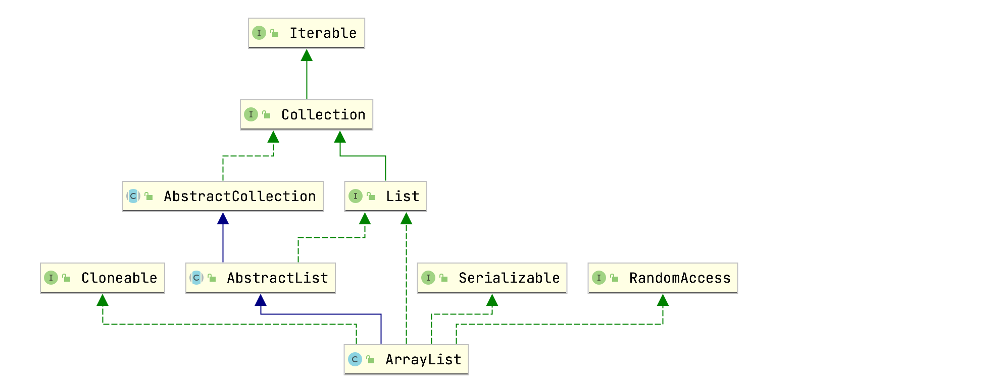
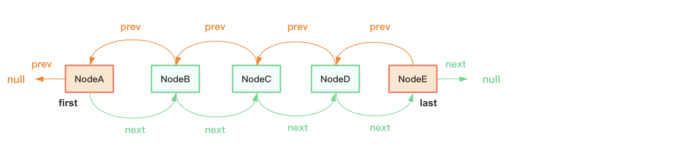
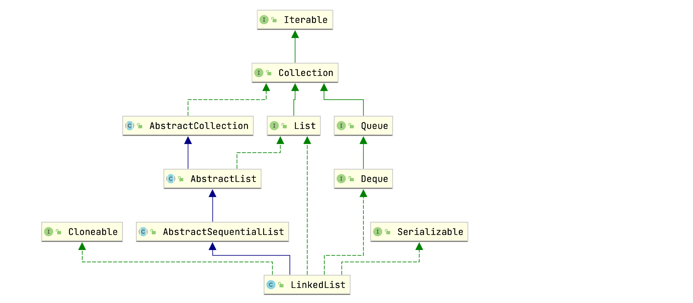

本文记录ArrayList & LinkedList源码解析，基于JDK1.8。
ArrayList
ArrayList实现了List接口的所有方法，可以看成是“长度可调节的数组”，可以包含任何类型数据（包括null，可重复）。ArrayList大体和Vector一致，唯一区别是ArrayList非线程安全，Vector线程安全，但Vector线程安全的代价较大，推荐使用CopyOnWriteArrayList，后面文章再做记录。
类结构
ArrayList类层级关系如下图所示：

ArrayList额外实现了RandomAccess接口，关于RandomAccess接口的作用下面再做讨论。
ArrayList类主要包含如下两个成员变量：
1 | public class ArrayList<E> extends AbstractList<E> |
elementData为Object类型数组，用于存放ArrayList数据；size表示数组元素个数（并非数组容量）。
ArrayList类还包含了一些常量：
1 | public class ArrayList<E> extends AbstractList<E> |
方法解析
知识储备
Arrays类的copyOf(U[] original, int newLength, Class<? extends T[]> newType)方法用于复制指定数组original到新数组，新数组的长度为newLength，新数组元素类型为newType。
- 如果新数组的长度大于旧数组，那么多出的那部分用null填充；
- 如果新数组的长度小于旧数组，那么少的那部分直接截取掉。
举两个例子：
1 | Long[] array1 = new Long[]{1L, 2L, 3L}; |
重载方法copyOf(T[] original, int newLength)用于复制指定数组original到新数组，新数组的长度为newLength，新数组元素类型和旧数组一致。
copyOf方法内部调用System类的native方法arraycopy(Object src, int srcPos,Object dest, int destPos, int length)：
src：需要被拷贝的旧数组；srcPos：旧数组开始拷贝的起始位置；dest：拷贝目标数组；destPos：目标数组的起始拷贝位置；length：拷贝的长度。
举例：
1 | Long[] array1 = new Long[]{1L, 2L, 3L}; |
指定位置插入元素：
1 | Long[] array1 = new Long[]{1L, 2L, 3L, null, null, null}; |
构造函数
public ArrayList(int initialCapacity)：
1 | public ArrayList(int initialCapacity) { |
创建容量大小为initialCapacity的ArrayList，如果initialCapacity小于0，则抛出IllegalArgumentException异常；如果initialCapacity为0，则elementData为EMPTY_ELEMENTDATA。
public ArrayList()：
1 | public ArrayList() { |
空参构造函数，elementData为DEFAULTCAPACITY_EMPTY_ELEMENTDATA。
public ArrayList(Collection<? extends E> c)：
1 | public ArrayList(Collection<? extends E> c) { |
创建一个包含指定集合c数据的ArrayList。上面为什么要多此一举使用Arrays.copyOf(elementData, size, Object[].class)复制一遍数组呢？这是因为在某些情况下调用集合的toArray()方法返回的类型并不是Object[].class，比如：
1 | Long[] array1 = {1L, 2L}; |
add(E e)
add(E e)用于尾部添加元素：
1 | public boolean add(E e) { |
假如现在我们通过如下代码创建了一个ArrayList实例：
1 | ArrayList<String> list = new ArrayList<>(); |
内部过程如下：
1 | public boolean add(E e) { |
通过上面源码分析我们可以知道：
- 任何一个空的ArrayList在添加第一个元素时，内部数组容量将被扩容为10；
- 扩容时，newCapacity为oldCapacity的1.5倍；
- 数组容量最大为Integer.MAX_VALUE；
- 尾部添加元素不用移动任何元素，所以速度快。
add(int index, E element)
add(int index, E element)用于在指定位置添加元素：
1 | public void add(int index, E element) { |
这里涉及到元素移动，所以速度较慢。
get(int index)
get(int index)获取指定位置元素：
1 | public E get(int index) { |
get方法直接返回数组指定下标元素，速度非常快。
set(int index, E element)
set(int index, E element)设置指定位置元素为指定值：
1 | public E set(int index, E element) { |
set方法不涉及元素移动和遍历，所以速度快。
remove(int index)
remove(int index)删除指定位置元素：
1 | public E remove(int index) { |
上述方法涉及到元素移动，所以效率也不高。
remove(Object o)
remove(Object o)删除指定元素：
1 | // 遍历数组，找到第一个目标元素，然后删除 |
方法涉及到数组遍历和元素移动，效率也不高。
trimToSize()
trimToSize()源码：
1 | public void trimToSize() { |
该方法用于将数组容量调整为实际元素个数大小，当一个ArrayList元素个数不会发生改变时，可以调用该方法减少内存占用。
其他方法可以自己阅读ArrayList源码，此外在涉及增删改的方法里，我们都看到了modCount++操作，和之前介绍HashMap源码时一致，用于快速失败。
LinkedList
类结构
LinkedList底层采用双向链表结构存储数据，允许重复数据和null值，长度没有限制：

每个节点用内部类Node表示：
1 | private static class Node<E> { |
Node节点包含item（存储数据），next（后继节点）和prev（前继节点）。数组内存地址必须连续，而链表就没有这个限制了，Node可以分布于各个内存地址，它们之间的关系通过prev和next维护。
LinkedList类关系图：

可以看到LinkedList类并没有实现RandomAccess接口，额外实现了Deque接口，所以包含一些队列方法。
LinkedList包含如下成员变量：
1 | // 元素个数，默认为0 |
方法解析
构造函数
LinkedList()：
1 | public LinkedList() { |
空参构造函数，默认size为0，每次添加新元素都要创建Node节点。
LinkedList(Collection<? extends E> c)：
1 | public LinkedList(Collection<? extends E> c) { |
该构造函数用于创建LinkedList，并往里添加指定集合元素。
add(int index, E element)
add(int index, E element)指定下标插入元素：
1 | public void add(int index, E element) { |
代码较为简单，无非就是设置节点的prev和next关系。可以看到，除了头插和尾插外，在链表别的位置插入新节点，涉及到节点遍历操作，所以我们常说的链表插入速度快，指的是插入节点改变前后节点的引用过程很快。
get(int index)
get(int index)获取指定下标元素：
1 | public E get(int index) { |
代码较为简单，就是通过node函数查找指定index下标Node，然后获取其item属性值，节点查找需要遍历。
set(int index, E element)
set(int index, E element)设置指定下标节点的item为指定值：
1 | public E set(int index, E element) { |
可以看到，set方法也需要通过遍历查找目标节点。
remove(int index)
remove(int index)删除指定下标节点：
1 | public E remove(int index) { |
remove(int index)通过node方法找到需要删除的节点，然后调用unlink方法改变删除节点的prev和next节点的前继和后继节点。
剩下的方法可以自己阅读源码。
RandomAccess接口
RandomAccess接口是一个空接口，不包含任何方法，只是作为一个标识：
1 | package java.util; |
实现该接口的类说明其支持快速随机访问，比如ArrayList实现了该接口，说明ArrayList支持快速随机访问。所谓快速随机访问指的是通过元素的下标即可快速获取元素对象，无需遍历，而LinkedList则没有这个特性，元素获取必须遍历链表。
在Collections类的binarySearch(List<? extends Comparable<? super T>> list, T key)方法中，可以看到RandomAccess的应用：
1 | public static <T> |
当list实现了RandomAccess接口时，调用indexedBinarySearch方法，否则调用iteratorBinarySearch。所以当我们遍历集合时，如果集合实现了RandomAccess接口，优先选择普通for循环，其次foreach；遍历未实现RandomAccess的接口，优先选择iterator遍历。